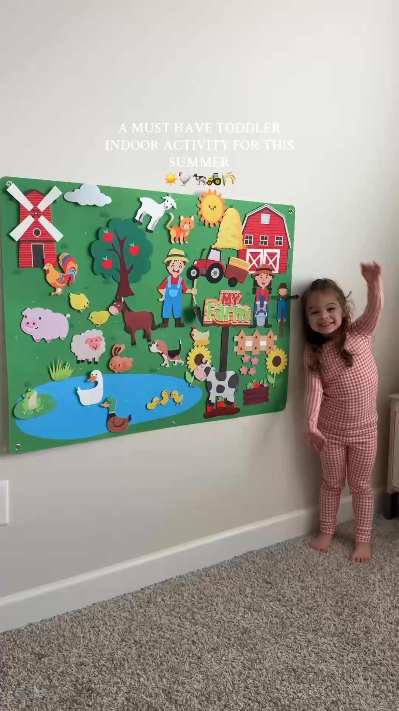
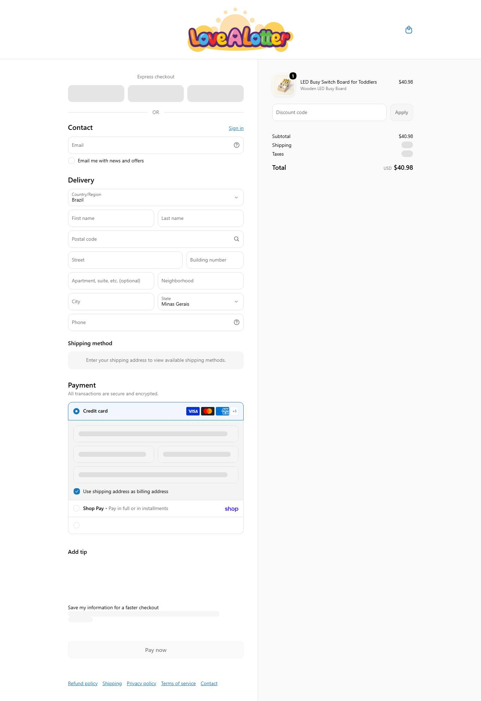

03 · concorrente · dropship puro · nível iniciante
Lovealotter MODELAR
O ângulo "o interruptor que ele pode tocar" e o gancho de pergunta. É o molde mais simples: um produto, anúncio direto para a página, sem pré-venda. Não copiar o "50% OFF - Today Only" permanente.
lovealotter.com ↗ativa desde 21/04/2020 (1º produto do catálogo)ShopifyInstagram @lovealotter, 1.574 seguidores
"😍My grandson absolutely loves this!"
Give your toddler a mini control center for hours of learning and fun, the Montessori Wooden Switch Board is a total hit! 😍🎁
Get it here �
"😍My grandson absolutely loves this!"
Give your toddler a mini control center for hours of learning and fun, the Montessori Wooden Switch Board is a total hit! 😍🎁
Get it here 👉lovealotter.com/switch-board
Get it here 👉lovealotter.com/switch-board
50% off + fast delivery ✈
não obtidoa Meta não publica gasto para e-commerce fora da UE
O que isso prova
Que alguém mantém este anúncio no ar há 121 dias.
O que não prova
Quanto vende, quanto gasta ou se dá lucro.

VÍDEO
#6 · Lovealotter.com
⭐⭐⭐⭐⭐50% OFF - Today Only!
😍 I bought this for my grandson, and went back to order another!
He stays engaged, happy, and learning with zero screen time 🧠✨
This Montessori Felt Board is a lifesaver for bu
😍 I bought this for my grandson, and went back to order another!
He stays engaged, happy, and learning with zero screen time 🧠✨
This Montessori Felt Board is a lifesaver for busy parents and loving grandparents.
⏳ They’re selling fast, almost gone
👉 lovealotter.com/felt-board
50% OFF + fast delivery ✈
não obtidoa Meta não publica gasto para e-commerce fora da UE
O que isso prova
Que alguém mantém este anúncio no ar há 121 dias.
O que não prova
Quanto vende, quanto gasta ou se dá lucro.
VÍDEO
#10 · Lovealotter.com
Finally, A Toy They're Allowed To Touch
"😍My grandkid absolutely loves this!"
Give your toddler a mini control center for hours of learning and fun, the Montessori Wooden Switch Board is a total hit! 😍🎁
Get it here �
"😍My grandkid absolutely loves this!"
Give your toddler a mini control center for hours of learning and fun, the Montessori Wooden Switch Board is a total hit! 😍🎁
Get it here 👉lovealotter.com/switch-board
Get it here 👉lovealotter.com/switch-board
50% off + fast delivery ✈
não obtidoa Meta não publica gasto para e-commerce fora da UE
O que isso prova
Que alguém mantém este anúncio no ar há 107 dias.
O que não prova
Quanto vende, quanto gasta ou se dá lucro.
03Tráfego
Não obtidonão obtidoSimilarWeb bloqueou a coleta automática de lovealotter.com (bloqueio de IP do CloudFront em todas as tentativas); a extensão manual não foi usada por escolha sua Sinal indireto: fora do ranking Tranco (tráfego abaixo do limiar dessa lista, o que não quer dizer zero).
não obtido
visitas/mês
SimilarWeb bloqueado
observado
não obtido
pago x orgânico
SimilarWeb bloqueado
observado
Instagram @lovealotter
presença orgânica
Instagram @lovealotter, 1.574 seguidores
observado · coletar.mjs
não anuncia no Google (contador 0)
outro canal pago
observado · Google Ads Transparency
04Faturamento e investimento
não obtido
Faturamento mensal
sem visitas medidas e sem reviews verificáveis suficientes
observado
não estimado
selo de confiança
nem medido nem por proxy: sem base para chutar
inferido
não obtido
mídia/mês estimada
depende do faturamento, que não foi estimado
observado
261
anúncios ativos (escala observada)
o sinal de tamanho que existe
observado · Meta Ads
A Meta não publica gasto de e-commerce fora da UE e o SimilarWeb bloqueou, então a receita desta loja não foi estimada (não usamos proxy de mídia sem uma loja medida como âncora: seria chute). Benchmark do setor (IRP ago/2026, Baby & Child): conversão 0,57% (piso, distorcido por ticket alto), CPA 10,92% da receita; CPM US$ 10,42 e CPC US$ 0,67 (referência pública Meta e-commerce 2026).
05Reviews
Judge.me instalado, sem contagem pública nas páginas amostradas. Tema de reclamação recorrente não obtidonenhum app expôs reviews de nota baixa nas páginas amostradas; no nicho todo, a reclamação recorrente é peça que solta e som/pilha (voz do mercado).
06Páginas da loja
Home
PDP · LED Busy Switch Board for Toddlers
Carrinho com item

07Anatomia do vencedor
Elemento
Decodificado
Big idea
Finalmente um brinquedo que ele PODE mexer: os interruptores da casa, liberados.
Mecanismo
Interruptores reais com LED num painel de madeira.
Hook
Pergunta de reconhecimento ("Does your toddler touch EVERY switch in the house?") + depoimento ("He didn't even ask for the iPad!").
Presell (pré-venda)
Não achado: o anúncio vai direto à página do produto.
Objeção principal
Preço, respondida com "50% OFF - Today Only" em quase todo título.
Ângulos ativos (títulos reais)
"Finally, A Toy They're Allowed To Touch"
"Does your toddler touch EVERY switch in the house?"
""He didn't even ask for the iPad!""
"⭐⭐⭐⭐⭐50% OFF - Today Only!"
Momentum da operação: estável e enxuto: 261 dos 275 anúncios no ar (95%), anúncio do busy board de interruptores no ar há ~120 dias.
08Catálogo e stack
Plataforma
Shopify
Apps
Judge.me, Klaviyo, Pinterest, Snap
Pixel da Meta
não obtidoID não exposto no HTML lido
Catálogo
116 produtos (mediana $34,99, faixa $6,99 a $158,89): busy board de interruptores, quadro de feltro, árvore de Natal de feltro, busy cube
Redes
Instagram @lovealotter, 1.574 seguidores
Frete
US$ 6,99, grátis acima de US$ 70
Garantia
janela não declarada na política lida
Prazo e BNPL
preparo em 1 a 2 dias úteis e entrega em 6 a 12 dias úteis, tarifas incluídas; BNPL não detectado
Troca
frete $6,99 nos EUA, grátis acima de $70; janela de devolução não declarada na política lida
Sinal de fornecedor
vendor de terceiros no catálogo ("Montessori Generation", "little-kingdom.uk", "GILOVERY LLC"); empresa UNITRADE LLC; entrega de 6 a 12 dias úteis com tarifas incluídas
o que copiarO ângulo "o interruptor que ele pode tocar" e o gancho de pergunta. É o molde mais simples: um produto, anúncio direto para a página, sem pré-venda. Não copiar o "50% OFF - Today Only" permanente.
09Dados não obtidos
Dado
Motivo
Método tentado
Visitas mensais
SimilarWeb bloqueou a coleta automática (CloudFront)
trafego.js com 2 tentativas
Reviews
Judge.me instalado mas sem contagem pública nas páginas amostradas
reviews.mjs (JSON-LD)
Comentários dos anúncios
o conector não entrega comentários
snapshot público
10Veredito
DROPSHIP PURO
modelo
inferido
MODELAR
veredito
inferido
NÍVEL INICIANTE
nível (11/12)
calculado
ARBITRAGEM
defensabilidade
inferido
Eixo do scorecard
Pontos
Sourcing simples
2/2
Ticket fecha sem escada complexa
2/2
Criativo simples de produzir
2/2
Mecanismo com urgência
2/2
Investimento de entrada baixo
1/2
Sem dependência de autoridade de marca
2/2
Total
11/12
Fontede onde veio
Meta Ads, products.json, prints, reviews.observado
Observaçãoo que foi visto
estável e enxuto: 261 dos 275 anúncios no ar (95%), anúncio do busy board de interruptores no ar há ~120 diasobservado
Interpretaçãoo que isso sugere
Finalmente um brinquedo que ele PODE mexer: os interruptores da casa, liberados.inferido
Decisãoo que a régua diz
MODELAR · DROPSHIP PURO · nível INICIANTEcalculado
Próxima açãoo que fazer agora
O ângulo "o interruptor que ele pode tocar" e o gancho de pergunta. É o molde mais simples: um produto, anúncio direto para a página, sem pré-venda. Não copiar o "50% OFF - Today Only" permanente.recomendado